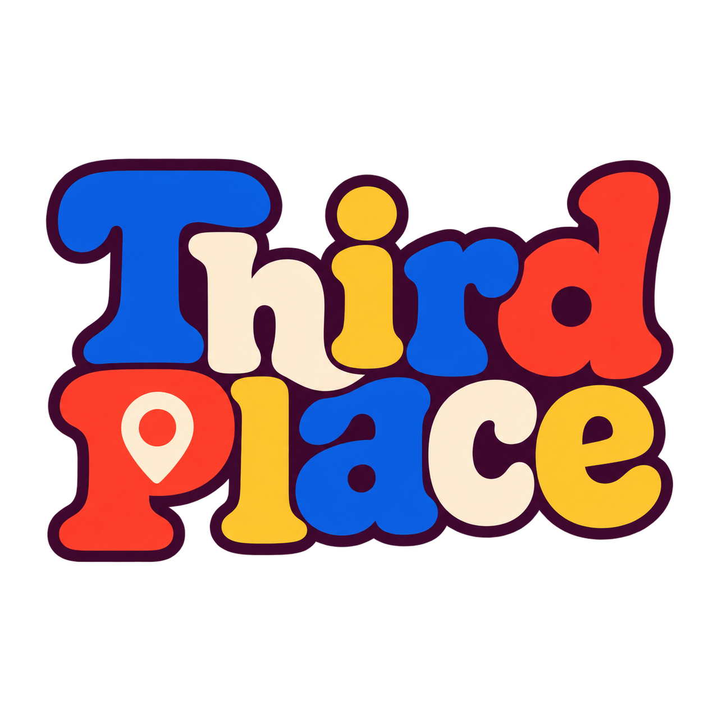

of the people we surveyed said they would use ThirdPlace.

ThirdPlace
Find your people.
Find your place.
Meet Jack.
It’s Friday evening. Jack is new to Dublin, has the night free and likes poker and football. His group chat has no answers.
“Poker?”“Five-a-side?”“Who’s actually free?”
J
Jack, 22
New to Dublin. Likes poker, football and last-minute plans.
Friends group
“Anyone doing anything tonight?”
Seen by 8 · no repliesPeople want this.
people worldwide experience loneliness.
WHO Commission on Social Connection, 2025Add a real quote from the survey here.
Name or role, e.g. “first-year student”
Add a second real quote here.
Name or role
Add a third real quote here.
Name or role
Jack picks what he likes.
A few interests, a rough area and how far he’ll travel. Only the area is shown to others, never his exact location.
ThirdPlaceStep 1 of 2
What are you into?
Only events Jack would go to.
Events are ranked by his interests, category and distance, and each one says why it’s there. A poker fan won’t see knitting.
For you, nearbyPortobello · within 5 km
Poker selected
Enough to say yes.
- Who’s hosting, and whether they’re verified
- The area, not a street address
- Price and how many spots are left
- The rules of the public group chat
Fri 16 Oct · 20:00 · Free
Low-stakes poker night
A relaxed game for beginners and regulars. Chips provided, no cash betting.
A
Hosted by Aoife18 endorsements · ID checked
MSD
5 going
Joining unlocks the public group chat.
Say hello before you arrive.
Each event has one public group chat. There are no private messages, so nobody gets cold DMs. Anyone can report a message.
Low-stakes poker nightPublic group chat · 6 members
A
Aoife · HostWe’ve got the back table from 8. Beginners welcome.
M
MateoI can bring an extra deck.
JackFirst time joining. See you there!
From one night to a regular game.
“Anyone doing anything?”
Poker, 1.2 km away
Six people around a table
“Same time?”
AMS
Would you meet them again?
Endorse the people you met. Reports are kept separate and a moderator reviews them.
Fill the quiet nights.
Maria runs a 30-seat restaurant near Portobello. Weekday evenings are quiet and she wants more people through the door. Posters and social posts reach people who don’t live nearby.
With ThirdPlace she lists a Tuesday supper night and promotes it to people within 5 km who like food and meeting new people.
M
Business portal
Maria’s Kitchen
Quiet slotTue 18:00–21:00
Promoted eventTuesday supper club
PromotedShown to people within 5 km who like food and social events
Promoted events are always labelled “Promoted”. Promotion changes the order, not who is eligible: people only see events that match their interests and distance.
Free to use. Pay to be seen.
Everyone
FreeBrowse, create events, join and chat. No payment needed.
Venue Boost · for businesses
€14.99one-time · 7 daysTop slots in For You for nearby people who like that activity, a highlighted pin on the map, and a “Promoted” label with the business name.
Pay once for a night you want to fill. Break-even is about one extra table, assuming roughly €15 spend per person.
Community Boost · for people
€2.99one-time · 3 daysFor someone hosting an event who wants to get the word out. Moves it higher for nearby people with matching interests.
Optional. Hosts who don’t pay can still run events.
Payments run through Stripe in test mode. We would test these prices with venues before launch.
Plan an event with AI.
A host describes the night they want. Our server asks a model on OpenRouter for a draft title, description and checklist. The host edits it before posting.
- The reply must be valid JSON in our format, or it’s rejected.
- The model can invent details, so nothing is posted automatically.
- It times out after 15 seconds, and the prompt bans addresses and contact details.
Nothing generated yet.
Paying, in Stripe’s test mode.
- The business picks Venue Boost for one of its events.
- Our server creates a Stripe Checkout session. The price is set on the server, not the browser.
- They pay with a test card. No real money moves.
- We check the payment with Stripe, record the order and mark the event “Promoted”.
StripeChecking…
Orders
Loading orders…
Where the first users are.
UCD society events
We start where students already meet. A stall with a QR code at society and club events, such as a poker or sports society night.
Societies post their sessions
Clubs list their open sessions on ThirdPlace, so there is something to join from day one.
Venues near campus
Cafés and restaurants nearby try a Venue Boost for their quiet evenings.
Friends bring friends
People join a public group chat, then share the next event in their own group chats.
We’d track sign-ups per society night, and how many of those people join an event in their first week.
What we tested and changed.
Built separately, wouldn’t fit
We assumed four separately built parts would work together. They didn’t: the feed ignored the area picked at sign-up, joined events never reached My Events, and two features used the same CSS names and broke each other. We now share one events store and gave each feature its own styles.
Location and age
We assumed people want exact distances. We show only a neighbourhood and ask for an age range instead of a birth date. The cost is rougher distance estimates.
Reports
We first planned for reports to lower a trust score straight away. We changed it so a report does nothing until a moderator looks, because automatic penalties can be used against someone.
Limits: events and people in the demo are made up, data resets when the server restarts, and ID checks are a mock.
ThirdPlace
Helping people find a local plan, and people to go with.